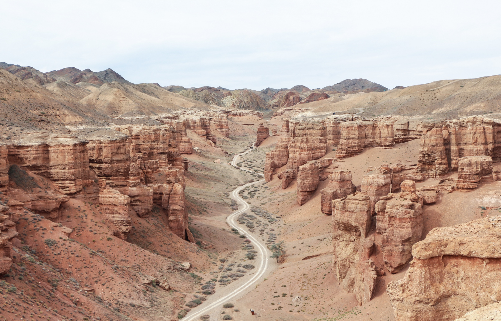
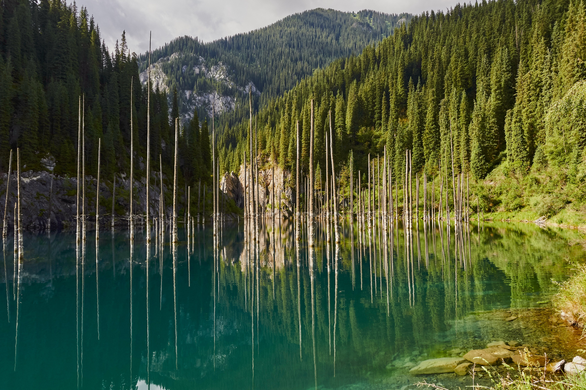
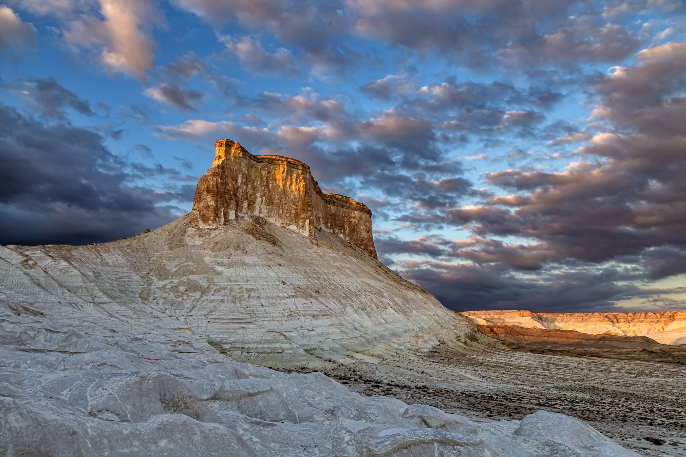
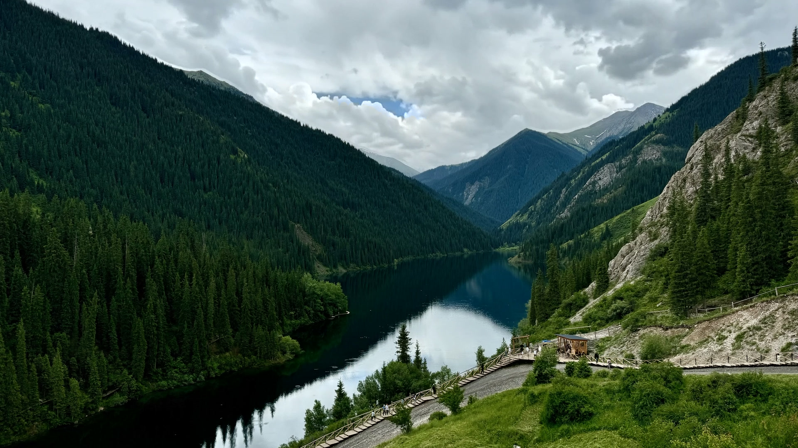
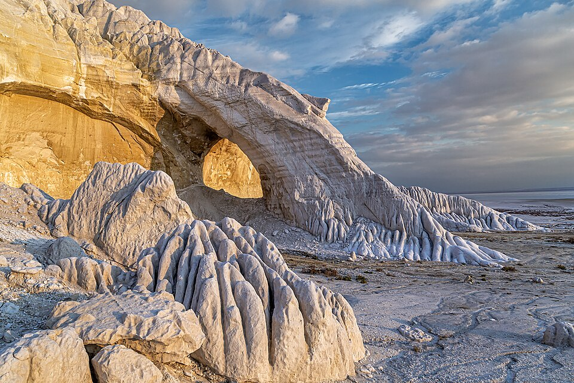
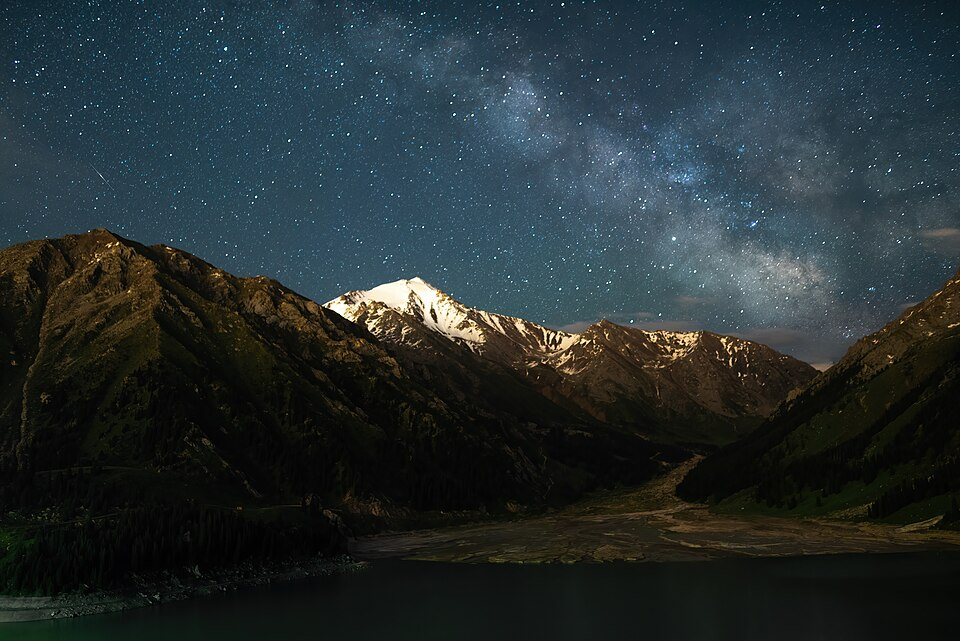

Charyn Canyon
Шарын шатқалы · Almaty RegionTwelve million years of wind and water carved the Valley of Castles. A lone road threads the red towers down toward the river.

Lake Kaindy
Қайыңды көлі · Kungei AlatauA spruce forest drowned by the earthquake of 1911. The trunks still stand — masts of a sunken fleet in turquoise glass.

Bozzhyra
Бозжыра · MangystauThe floor of a vanished ocean. Chalk fangs of the Ustyurt catch the low sun beneath a travelling sky.

Kolsai Lakes
Көлсай көлдері · Tien ShanThe pearls of the northern Tien Shan — alpine lakes strung along a spruce-dark gorge, the weather always on the move.

Tuzbair
Тұзбайыр · MangystauWhere the Ustyurt plateau breaks off into the salt pan. After rain the sor turns to mirror; in dry wind, a white desert of light.

Big Almaty Lake
Үлкен Алматы көлі · Trans-Ili Alatau2,511 metres above the city's noise, the lake sleeps under the galactic core. Wait for a falling star.